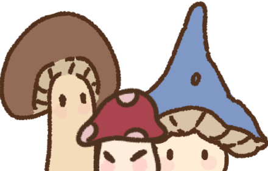
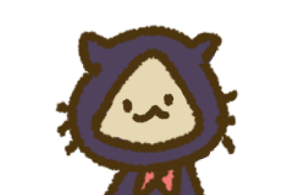
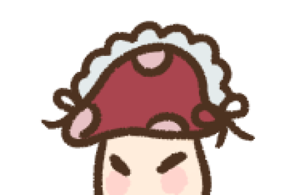
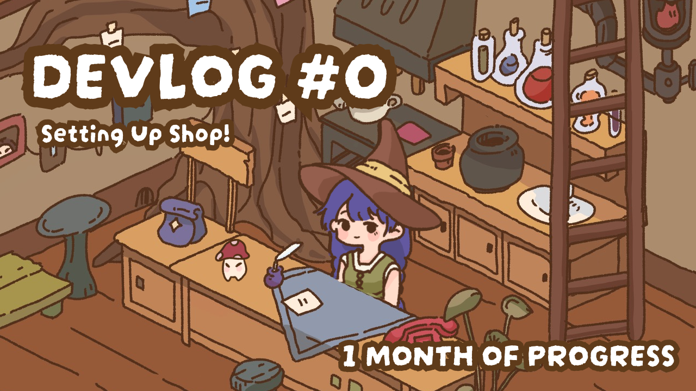
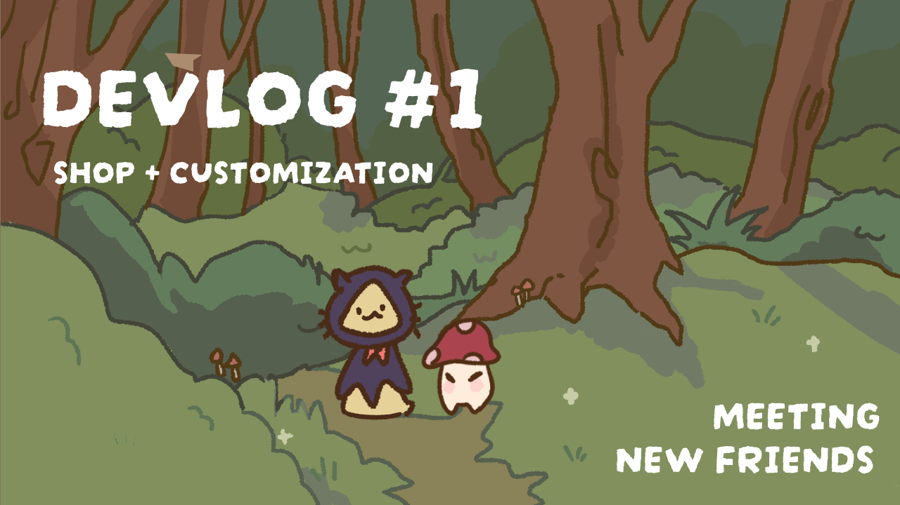
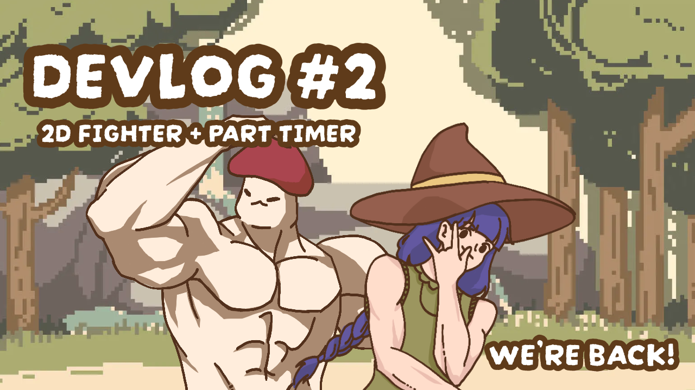

A cozy gamified productivity app where you play as a witch running a potion business. Real-life tasks become potion orders from charming mushroom townspeople — complete them to earn coins, unlock customizations, and grow your shop.
Most productivity apps treat tasks as obligations. Witch Task reframes them as something you want to get to — because completing your physics homework means a mushroom villager gets their potion, your shop grows, and your witch gets a new hat.
The inspiration came from cozy games like Tabikaeru, Animal Crossing, and Stardew Valley — games that make showing up every day feel rewarding without pressure. The goal was to bring that same energy to a productivity tool without sacrificing actual usefulness.
The task ordering system is built around Big Five personality trait research — users take a quiz on first launch that identifies their learning style, then tasks are surfaced in an order that matches how they actually work best.
A pre-build survey results from students and viewers shaped the task ordering and personality systems. Two findings stood out: feeling overwhelmed was the #1 reason people procrastinate, and breaking tasks into smaller pieces was the most-wanted solution
The sample skewed toward high Openness (92%), high Neuroticism (92% frequently anxious), and high Agreeableness (72%) — a typical student profile. Anxiety-aware design is important for this audience.
People download productivity apps because they already know they need help — they're self-aware enough to seek structure, but something keeps them from sustaining it. Witch Task is built around what that something actually is.
The mushroom customers aren't decoration. They exist because caring about something — even a small fictional thing — changes your relationship to the work attached to it. When you complete a task, a villager gets their potion and leaves happy. That small moment of resolution is the point. Emotions are a strong motivational system, and cozy games have proven this at scale.
The game world is synchronized to your actual life — real-time weather affects the shop atmosphere, portrait lighting shifts with the time of day, and special events tie to real calendar moments like birthdays and seasonal changes. When your in-game world mirrors the outside one, the app becomes part of your day rather than something you have to remember to open.
Interactivity is the mechanism of care. The shop refreshes. Silk has new items. DanDan is waiting for a rematch. These small systems aren't filler — they are the reason to return. When users engage with these loops, they build genuine investment in a world that grows alongside their real-life progress. Motivation follows investment, not the other way around.
The mushroom customers are unassuming creatures — they show up, order a potion, and wait. But completing tasks advances their stories. ShuShu returning enough times is what introduces DanDan. The world expands through use. This makes the act of finishing your real tasks the mechanism of narrative discovery, not just a checkbox.
In a saturated mobile market, cozy aesthetics remain underlapped — particularly in the productivity space, which has historically competed on features rather than feeling. We believe the niche has been growing for years and is not yet dominated. A beautifully designed, character-driven productivity app targeted at anxious, creative users is a product category that doesn't fully exist yet.
Cozy games have had a sustained commercial moment since 2020. Animal Crossing: New Horizons sold 13 million copies in its first six weeks. Stardew Valley has crossed 30 million lifetime. Unpacking, A Short Hike, Spiritfarer, and others have built devoted audiences without violence, urgency, or competition. The genre is no longer niche.
The cozy game audience and the "person who struggles with productivity" audience are probably the same people. Both skew toward anxious, creative individuals who respond to warmth and low-stakes environments. Witch Task is built for that overlap — a game that earns daily opens through genuine emotional engagement, not notification pressure.
A competitive analysis of top-grossing products informed our design decisions, helping us identify opportunities in the market.
At the start of each week users fill out a weekly planner — task name, description, difficulty, and deadline. Each task is assigned a unique order number and converted into a potion request from a mushroom inhabitant. Task data is saved locally via binary serialization across sessions.
When a task is completed, a stamp marks it done, the entry collapses, coins are awarded, and the mushroom customer collects their potion and leaves.
Timer opens pre-filled based on task difficulty — 15 min easy, 30 medium, 60 hard — freely adjustable from 5 to 120 minutes. Runs at the top of the screen while the customer waits on the bench.
If the user exits mid-session, the timer subtracts elapsed time on next open. Pause, resume, and cancel are accessible from an expandable task detail panel.
Rather than maintaining separate PNGs per color option, a ShaderGraph shader uses the ReplaceColor node to swap designated sprite colors at runtime. Material property blocks let skin, hair, and hat share one shader instance.
Long hair is split into bangs and back layers for correct compositing. Categories: skin tone, hairstyle, hair color, shirt, and hat.
Silk's shop resets every day at 7am. Items are Unity Scriptable Objects loaded into template prefabs — flexible for 100+ planned items across furniture, consumables, stationery, and miscellaneous.
Daily refresh avoids duplicates via a UID dictionary saved in binary serialization. Tapping an item triggers Silk's dialogue — a deliberate choice over a generic shop UI.
A 2D fighting minigame unlocked by challenging part-timer DanDan for a free work week. Best-of-three rounds with normal attacks, blocks, and burst attacks requiring three energy charges. Enemy AI manages movement, range-based attack decisions, and a randomized block chance.
Little Witch's burst fires five laser beams from spatial rifts. Mushroom Man's ground-smash requires dodge or block. All pixel art and animations were made in Aseprite. Loads in landscape mode with a rotation prompt.

The town inhabitants who order potions — each one corresponds to a real-life task. Up to two can be in the shop at once. They wander until tapped, then wait on in the shop while the user works.

A forest merchant who carries an infinitely expanding shadow bag. Silk's understanding of human item value is poor — occasional overpricing may occur. Shop resets daily at 7am after a new border stroll.

Available shop part timer for hire. Loves playing Forest Fighter 7 on his free time.
A returning mushroom customer who triggers the DanDan introduction event after enough leaves are cleaned. Acts as the social connector between the player and new characters.
NPC personality is central to the game — the goal is for users to genuinely look forward to interacting with them the same way Animal Crossing villagers make users want to log in daily.
Each character has a distinct personality, a role in the shop ecosystem, and dialogue that updates as the story progresses. More characters are planned as the village expands.
We document progress through a YouTube devlog series — covering concept, technical decisions, art process, and honest updates on what's working and what isn't.



The art direction aims for handmade warmth — textured lines, soft palettes, and character designs that feel like they came from a sketchbook rather than a design tool. Every visual decision is filtered through the same question: does this feel cozy and inviting?